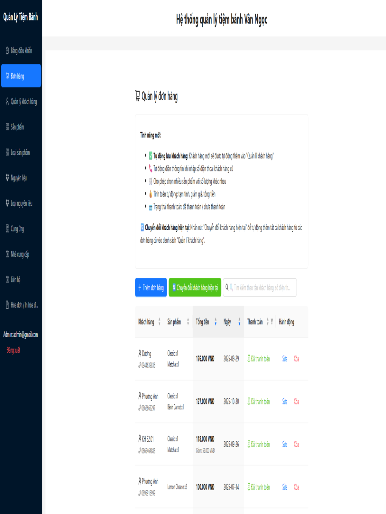
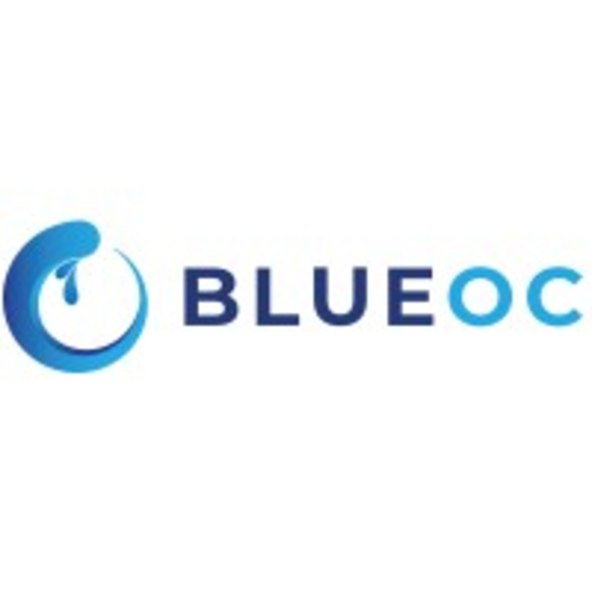

Frontend
This Portfolio Website
React · CSS3 · Animated
Work & Projects
Software Engineer · Full-Stack Developer · Production-ready engineering with honest deployment notes.
FELLOWSHIP · APPLIED AI · VINGROUP
May 2026 – Aug 2026 · VinUniversity / Vingroup
Program: 12-week full-time · Fully funded · Monthly stipend
Focus: Applied AI · Machine Learning · Python · Production embed
Competitively selected for Vingroup's inaugural AI Thực Chiến fellowship — a full-time 12-week program training high-potential engineers in applied AI. Curriculum covers AI foundations, a specialization track, and 6 weeks embedded at a Vingroup technology company (VinSmartFuture, VinRobotics, or VinSOC) working on real production AI projects under Vingroup engineers and researchers.

FULL-STACK · CI/CD · VITEST + PLAYWRIGHT
Solo-built · React 19 · Still in production
Stack: React 19 · TypeScript · Firebase · Ant Design · Cloudinary
Scope: 12+ modules · 3 stores · Vitest + Playwright · GitHub Actions CI
Solo-built Vietnamese bakery admin app still running in production for 3 stores. Lazy-loaded routes, code-split dashboard charts, live Firestore listeners, and Cloudinary uploads. Locked Firestore rules to a single admin UID, centralized requireEnv checks for secrets, and restricted API keys — with Vitest unit tests and Playwright E2E under GitHub Actions for lint, test, build, and Vercel deploys on every push to main.
PRODUCTION CRM · PRIVATE SOURCE
10K+ Events Daily · 99.9% Uptime
Stack: Python · Azure · Application Insights · Stringee API
Scope: VoIP integration · Vendor management · Async patterns
Maintained a live production CRM with real-time call integration via Stringee VoIP. Instrumented Azure Application Insights across 3 vendors, reducing debugging time by 60%. Fixed async lead sync with exponential backoff — 99.9% success rate.
CAPSTONE · BACKEND LEAD · 38% OF ALL COMMITS
Django REST · Vue3 · 7 Apps · Built Almost Alone
Stack: Django · PostgreSQL · Vue3 · Docker · Pytest/Vitest
Scope: 7 Django apps · 179 commits · OCR integration · Real-time notifications
Led backend architecture solo for Hanoi Medical University's clinical case platform. Designed all models, serializers, migrations, and API contracts across 7 Django apps. Built multi-step case creation wizard, PDF/Word export, real-time WebSocket notifications, VietOCR integration with fallback, and a grade claim system — while managing frontend-backend alignment and full Docker infrastructure.

PROFESSIONAL · PRIVATE SOURCE · AGILE TEAM
React · FastAPI · Docker · Real production team
Stack: React · FastAPI · Docker · SQL migrations
Scope: Timesheet · TopHat LM · OTA backend · RBAC
Delivered production features for two internal workforce systems — Timesheet and TopHat LM — used daily by internal teams. Designed overtime planning, shift management, and granular RBAC from scratch. Built FastAPI backend scaffolding, database models, and unit tests for an OTA platform. Operated fully within an Agile workflow — PR reviews, Docker containerization, SQL migrations, cross-functional collaboration.
Craft
Same stack as on About — tools I use in production, not self-rated scores.
Verified
Harvard University
Harvard's Introduction to Computer Science. Problem sets in C, Python, SQL, JavaScript, plus final project.
View certificate →Harvard University
Introduction to Artificial Intelligence with Python — search, optimization, machine learning, neural networks, and twelve hands-on projects.
View certificate →Amazon Web Services
Cloud computing fundamentals, core AWS services, security, architecture, pricing, and support.
View on Credly →Amazon Web Services
AWS Academy graduate training in cloud architecting concepts and services.
View on Credly →
Nguyen Hoang Minh — Software Engineer · … contributions
Live frontend: clinical-case-platform-deployment.vercel.app — Django/Vue deployment repo. Postgres/API hosted on Render can sleep between visits on free tiers; redeploy wakes the database until the cycle repeats.
Inference engine with Chaining, Truth Table, FC and BC/David-Putnam-Logemann-Loveland Algorithm. University AI course project.
Live demo: home-bakeryvite.vercel.app (admin login). Full-stack ERP for real stores on React 19, TypeScript, Firebase, and Cloudinary — free-tier quotas apply.
Live demo: lib-assist-six.vercel.app — Python library assistant with API config and deployment workflow.
JavaScript project from BlueOC work.
TypeScript practice sandbox — live at mos-practicesandbox.vercel.app
Mini LMS system for home-scale deployment — live at mini-lms-home-scale.vercel.app
C++ solutions to LeetCode problems — algorithm and data structure practice.
TypeScript enterprise monitoring and portfolio project.
Engineering practice sandbox — live at eng-practicesandbox.vercel.app
Psychology and health platform built with Vue — live at psych-health-vue.vercel.app
Personal AI project in Python.
Cryptocurrency trading platform prototype.
Mobile application project in Kotlin.
Data structure and design patterns course materials and implementations.
This portfolio website. Built with HTML, CSS, JavaScript — featuring watercolor aesthetic and Final Fantasy theme.
Also worth a look
React · CSS3 · Animated

FastAPI · REST · Async

Django · PostgreSQL · Vue3

Final Fantasy · Chopin · Covers

Application Insights · Vendor APIs

Python · CS50 P-Sets
Open to full-stack development, DevOps, and AI-driven projects. Let's build something that matters.